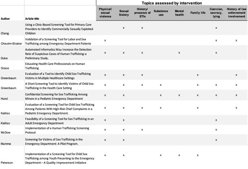

Red Light: A Review of Interventions for Detecting Victims of
Human Trafficking in U.S. Healthcare Facilities
Viviana Luccioli
University of Virginia
Global Public Health Capstone
Dr. Rupa Valdez
Spring 2024
Table of Contents
Background of Human
Trafficking
Summary of Existing
Literature
Defining the Research
Question
Inclusion and Exclusion
Criteria
II. Data type and data collection methods
II. Type of Healthcare Facility
III. Topics Assessed by Intervention
Comparison to Previous
Reviews and Literature
Introduction: In the U.S., where there is a growing prevalence of
human trafficking reports, an estimated 85% of trafficking victims visit the
emergency department during their captivity. Healthcare facilities may be an
impactful setting for using interventions to detect victims because of the
privacy and intimacy of patient-provider interactions. This modified systematic
review seeks to understand what efforts are being made in
healthcare facilities across the U.S., how they differ or are consistent, and
how they have affected identification rates of victims in order to shed light
on what gaps exist and how more facilities in the U.S. should adopt necessary
measures.
Research question: What are the characteristics of existing
interventions for detecting victims of human trafficking in healthcare
facilities in the United States, and what is their demonstrated impact?
Methods: A modified systematic review was conducted by first searching and
selecting articles containing key search terms related to the research question
through the databases PubMed, ClinicalKey, Embase, EBSCOHost, Web of Science, and JSTOR. Inclusion and
exclusion criteria were then applied. A data extraction table was created to
synthesize the literature.
Findings: Twelve studies met inclusion criteria. The synthesis
of evidence yielded four key themes that differentiate the characteristics of
existing interventions: (1) the type of intervention method, (2) the type of
healthcare facility, (3) the topics assessed by the intervention, and (4) the
intervention outcomes reported. The studies assessed revealed a lack of
consistency among the few existing interventions: the vast majority were
surveys, they occurred in various types of healthcare settings, they addressed
varying risk factors for human trafficking, and most were not analyzed for
validation measurements, but the ones that were had high tendencies for false
positives.
Conclusion: The findings indicate that healthcare settings show
potential as being an effective setting for breaking barriers to illuminate
victims and connecting them with services, but there is a need for a
standardized, coordinated U.S. healthcare intervention for human trafficking
and further collaboration with other sectors such as mental health research and
services, and immigration and social services, and law enforcement.
Human trafficking is the fastest growing criminal industry in the world.1 As defined by the United Nations Office on Drugs and Crime, human trafficking is the recruitment, transportation, transfer, harboring or receipt of people through force, fraud or deception, with the aim of exploiting them for profit.2 It is estimated that 27.6 million people worldwide are currently victims of human trafficking,3 but given the complex nature of the crime, traffickers often operate under the radar and the vast majority of victims remain hidden sufferers. Victims are also unlikely to self-report the realities of their captivity to authorities because of feelings of self-blame for their situation, fear of punishment from their trafficker, or fear of being punished for being involved in a crime from authorities themselves.4 Identification can also be difficult because over one-third of traffickers are family members or legal guardians to victims, which complicates the ability to crack the relationship and break the personal loyalties between traffickers and the victim.5 Healthcare facilities may be an impactful setting in which to implement measures for detecting victims of human trafficking because of the personal information shared and the intimacy of the patient-provider interaction.
The United States officially recognizes two main forms of human trafficking: forced labor and sex trafficking.6 Forced labor, or labor trafficking, entails the use of violence, fraud, or coercion to force or exploit services of another person.6 Sex trafficking involves the use of violence, fraud, or coercion to force a person to engage in a commercial sex act, and child sex trafficking is the commercial sexual exploitation of minors.6 Almost half of the victims of victims of human trafficking in the U.S. are children.7 Though various other forms of human trafficking exist, this paper will focus on these two and the subgroup of child sex trafficking.
It is difficult to know the exact prevalence of human trafficking in the United States, but the U.S. National Human Trafficking Hotline identified and confirmed 14,844 victims or survivors of trafficking in 2020 and 164,839 victims since its inception in 2007.8 California is the state in which most victims of trafficking have been identified, followed by Texas, Florida, and New York.8 According to Polaris, the nonprofit non-governmental organization operating the National Human Trafficking Hotline, 72% of these cases were situations of sex trafficking.7 The National Human Trafficking Hotline statistics reports approximately 25% of identified victims in the US were minors, and approximately 85% were female-identifying. Nearly twice as many identified victims in the US were foreign nationals, as opposed to US citizens.8 Polaris also reported that 54% of victims were characterized with the vulnerability of being a recent migrant or having recently been relocated, making this the most prevalent risk factor.7
The
United States government self-reports to “fully meet the minimum standards for
the elimination of trafficking in persons”.6 The
first comprehensive anti-trafficking federal legislation to pass in the U.S.
was the Trafficking Victims Protection Act (TVPA) of 2000, which outlined a
coordinated approach to combat trafficking in all states and provided the
federal government with the resources to lead such a campaign.9 The U.S.
has also officialized two significant types of immigration authorizations to support
foreign nationals who experienced human trafficking in the U.S.: the T-1
Nonimmigrant Status (T Visa) and Continued Presence. The T-Visa allows victims
of human trafficking identified by law enforcement to remain in the U.S. for a
preliminary period of four years with full federal and state benefits and services
to the same extent as refugees with a guaranteed lawful permanent residence
card and citizenship after compliance with the law over the period.10 Continued
Presence is a two-year immigration designation which allows uncertified foreign
nationals who were victims of trafficking to lawfully remain in the U.S.
temporarily on a free work permit with eligibility for other federal benefits
and services to the same extent as refugees, granted they provide witness
support for helping law enforcement to track their traffickers11.
The Bureau of Justice Statistics reports that in the last decade, arrests for human trafficking offenses rose by 62% and prosecutions increased by 84%.12 This indicates that efforts to control human trafficking have been effective and growing. However, the U.S.’s response to human trafficking is still limited by certain legislative gaps that are not enforced at the federal level, and therefore vary by state governments, such as policies on criminal records relief for victims of trafficking.13
The U.S. embodies a complex healthcare system, mixing both a for-profit private health insurance market coverage and a publicly financed government plan. However, the public system is selective and does not cover all people in the country. While the U.S. is renowned worldwide for its stellar private healthcare quality, disparities in access to healthcare are vast and extreme. Particularly, victims with some of the key vulnerabilities for human trafficking (poverty, broken family life, and undocumented immigrant status, among others) may be susceptible to impaired access to healthcare in the United States.14
This systematic review is in conversation with existing literature that examine the intersection between human trafficking and healthcare. Various articles and reviews have been developed to explore risk factors and characteristics for sex trafficking relevant to the healthcare field15–17, which have substantiated an informed base to prepare for further research of this topic. Others reviewed gaps and barriers to identification of victims of human trafficking and the relevance to healthcare services by reviewing the experiences of identified victims.18,19 Another relevant review assessed the prevalence and risk of public health impairments as a result of human trafficking.18 Three other reviews were found that specifically addressed interventions to detect victims of trafficking in healthcare facilities. One assessed all identifiable tools developed for use in healthcare settings created by large agencies such as the nonprofit Polaris or the U.S. Department of State but varied from the current review in that the interventions were not examined for their demonstrated effectiveness or application in a healthcare facility, only their contents.20 Another similar integrative review examined interventions for detecting victims of sex trafficking in adult emergency departments.21 The third similar paper performed a scoping review to cover only validated screening tools for human trafficking identification in healthcare settings.22 In all three of these related reviews, very few studies met their criteria (nine, eleven, and eight, respectively) and they all came to a similar consensus in their discussion that too few interventions exist for combatting this crime in healthcare settings, and among them, there is little consistency in composition or effectiveness. They all emphasized the need for the validation of appropriate interventions that encompass multifaceted approaches to identifying victims. This current systematic review intends to expand upon existing literature and contribute to academic discussion regarding the human trafficking and healthcare.
Human trafficking is a critical concern to public health because it directly and indirectly sabotages the health and wellbeing of victims through various annexes: violence-related injuries, sexually transmitted infections, pregnancy, malnourishment, forced substance abuse, mental health impairments from trauma, and more.5 Sex trafficking particularly has serious societal consequences as it plays a role in the accelerated spread of HIV.23
Existing literature suggests that healthcare facilities are a critical setting in which to implement efforts to detect victims of trafficking because providers possess the potential to unearth intimate, personal details about an individuals’ life and health that may indicate signs of trafficking.24 Emergency departments or other urgent health clinics are particularly key settings in which protocols for detecting victims are necessary because while some victims may avoid non-urgent healthcare visits in order to maintain the secrecy of their trafficker, no one can avoid the need for emergency healthcare.21 However, a U.S.-based study estimates that up to 85% of victims of human trafficking come into contact with a provider by seeking healthcare in the U.S. during the time they are being trafficked, while going undetected.25 This means that healthcare facilities often encounter victims of human trafficking without ever knowing so, and therefore not being able to intervene. Healthcare facilities should be equipped with adequate protocols, interventions, and resources to detect these hidden victims and connect them with necessary support and resources.
This
modified systematic review seeks to answer the research question, what are the existing interventions for
detecting victims of human trafficking in healthcare facilities in the United
States, and what is their demonstrated impact? Through a thoughtful and
comprehensive review of existing literature and empirical studies on the
subject, this paper hopes to understand what efforts are being made in
healthcare facilities across the country, how they differ or are consistent,
and how they have affected identification rates of victims. Ultimately, this
paper hopes to shed light on what gaps exist among the developed interventions
and how more facilities in the United States should adopt necessary measures.
This modified systematic review was conducted by one researcher between January and May 2024. The design pursued a similar procedure to a full systematic review but analyzed fewer sources and consulted fewer contributors. Similar to a full systematic review, the researcher defined the research question, applied inclusion and exclusion criteria, performed a search strategy, searched for relevant sources through verified databases, and then extracted relevant data for evaluation and synthesis.
This review sought to answer the research question: “What interventions have been developed for detecting victims of human trafficking in healthcare settings in the US and what is their demonstrated impact?” Human trafficking was defined as the illegal use of force, fraud, or coercion to compel a person into commercial sex acts or labor against their will.6 Interventions were defined as any screening tool or protocol that aimed to detect or increase detection of this population in settings where healthcare services are provided. Healthcare settings were defined broadly as any facility providing healthcare, such as emergency departments, pediatric offices, and specialty clinics. Impact was specified as the observed numbers of victims of sex trafficking identified with the help of the particular intervention.
The search strategy for this paper entailed searching various combinations of the key search terms sex trafficking (or alternative terms trafficking, human trafficking, sexual exploitation); identification (or alternatives screening or detection); tool (or alternatives screening tool or intervention or strategy); health care (or hospitals, clinics, urgent care, gynecology, women’s health, medical); and USA (or US or United States). The searching was conducted in the databases PubMed, ClinicalKey, Embase, EBSCOHost, Web of Science, JSTOR, as well as the Google Scholar search engine. This search strategy originally yielded (n=16) potential sources, which were then evaluated on their eligibility as defined by the inclusion criteria.
To meet the inclusion criteria, the source must have been a peer-reviewed, empirical study. Included sources were required to have been conducted in the United States. They must have addressed a form of human trafficking. It was required that they assessed a specific intervention or screening tool, and occurred in a setting where healthcare services are provided. Studies were excluded if they addressed medical services but did not occur in facilities where services are directly provided (for example, educational interviews in a medical school), or they were survey-based studies evaluating the comfort levels or perceived preparedness of healthcare providers in the hypothetical scenario of suspecting a patient victim of sex trafficking. After this selection process, (n=12) studies remained included in the core systematic review of this paper.
A Microsoft Excel spreadsheet was manually created to extract data from the twelve empirical studies that addressed the research question and satisfied the specified inclusion criteria. This spreadsheet was organized to extract general, defining information about each empirical study in logical categories. Data were retrieved on the publication information of each study, the study sample demographics and characteristics, the study location and characteristics of the setting, the components and details of the studied intervention, and the data collection methods and type of data. The spreadsheet format of this data extraction allowed for comprehensive scanning of the studies for preliminary synthesis and the identification of patterns, deviations, and key themes among the results.
All twelve studies included in this review26–37 met the specifications for the inclusion criteria and were deemed acceptable in quality by the status of their publication in an academic journal. The studies were analyzed and screened thoroughly by the researcher and appropriate results were extracted for synthesis. All twelve of the studies were sources of primary data analysis and all used quantitative methods in their study design. Eleven of the studies collected data from healthcare patients26–28,30–37 and one collected data from healthcare providers.29 The studies varied in their data collection methods and all but one26 utilized more than one method. Five studies collected data through interviews from interviews30,31,33,34,37, three collected from technical screening software28,32,37, seven from patient-provider interactions28,30,31,33,34,36,37, five from medical chart reviews26,28,34,35,37, ten from surveys27,29–37, and one utilized a focus group.27 Eleven of the studies used descriptive statistics for data analysis26,28–37, while one used psychometric analysis.27 Seven of the studies were prospective studies27,29–33,36 while the other five were retrospective.26,28,34,35,37
The
interventions in the studies varied in their specificity of the type of
trafficking or exploitation they aimed to detect. Six specifically addressed
victims of child sex trafficking26,30–33,37, three
addressed adult or general sex trafficking27,34,36, three
addressed the broader genre of human trafficking 28,29,35, and one
additionally specified victims of labor trafficking in addition to sex
trafficking27. Three
of the studies specified their sample of interest to only females26,35,36, six
applied to only children26,30,31,33,34,37, and four included a sample of adults 18 and older, regardless of
gender27–29,34. One
study evaluated only female children.26 Among
the studies with samples of children, the patients’ ages ranged from eleven to
eighteen, and they all addressed child sex trafficking as the form of
trafficking of interest. Of the studies that specifically studied females, one
aimed to detect child sex trafficking26, one
aimed to detect sex trafficking36, and one
aimed to detect human trafficking.35
In regards to the demographics of the studies, seven collected data on the race and ethnicity of the patients included in their study26,27,30–32,36,37, of which four were composed of mainly white patients (with sample compositions of 40%32, 31%36, 37%30, and 45%37 white patients), two were mainly composed of Black patients (63%31 and 24%27), and one was mainly composed of Asian patients (57.5%26). One study did not address race and ethnicity, but addressed financial demographics, and the sample comprised 53.4% patients in financial vulnerability who made less than $15,000 a year.35
All
12 studies specified that for eligibility of patient inclusion in the study,
they must have sought care or currently be seeking care at the healthcare
facility. Four of the studies included patients based on if they were reported
with high-risk chief complaints.30,31,33,34 Two
studies included patients whose electronic health records were flagged for
including predefined red flag keywords by an electronic screening tool.28,37 Nine
studies used convenience sampling to select their sample,26,28,32,33,35–37 two used random sampling27,34, one
used a group randomized controlled trial.29 The
sample sizes ranged across the studies from 10831 to
26,97434, with a
median sample size of 462.5. Four studies had sample sizes greater than 1,00027,28,34,37, and the
remaining eight had between 100 and 1,000.26,28,30–33,35,36
All studies occurred in the United States. Four studies took place in California 26,28,29,36, with one specifying the geographic location as the San Francisco Bay Area.29 One occurred in an unspecified southeastern U.S. city33, one occurred in Atlanta, Georgia31, and one occurred in Minnesota.37 One occurred at two sites in New York City and Fort Worth, Texas.27 Four studies occurred in unspecified locations in the U.S.30,32,34,35 Eight studies specifically stated they took place in an urban setting.26–28,30–34
This systematic review has identified three main themes through which the characteristics of the studied interventions and their demonstrated impact are distinguished: the intervention method, type of healthcare facility, the topics assessed by the tool, and intervention results. A subtheme of administration method was developed within the intervention method theme to further distinguish results. Results, as understood through these themes, are presented below.
The intervention method was defined as the structured approach, tool, protocol, or methodology implemented and utilized in a healthcare setting that served the goal of identifying potential victims of sex trafficking. The types of intervention methods identified among the included studies were surveys, interviews, electronic tools, medical record examinations, and educational programs. While the specific intervention methods are distinguished, the overall interventions in the studies could encompass the utilization of various methods in combination. Seven out of the twelve studies incorporated two methods in their studied intervention28–32,34,35, and one incorporated three: survey, electronic tool, and medical record examination.37
Ten out of the twelve studies utilized surveys or questionnaires as an intervention component.27,29–37 There was variation in the administration strategy among these surveys, which will be discussed as a subtheme in this section. Of these ten intervention studies, three were based exclusively on the survey as the sole screening tool27,33,36, two were implemented in conjunction with an electronic tool32,37, three in conjunction with an educational program29,34,35, and two in conjunction with a medical record examination.31,37
In all but one study, the surveys were administered to patients with the intention of collecting personal data that may indicate possible trafficking victim status. Grace et. al’s 2014 study was the only one where the survey was administered to emergency department healthcare providers.29 In this study, two surveys assessing providers’ knowledge on human trafficking and understanding of how to detect victims were actually administered before and after their attendance of the educational presentation. The increase in score between these surveys were also compared against a control group of providers who were not given the educational intervention at the time. Results from the study showed that healthcare providers in the intervention group increased their knowledge on human trafficking from the educational intervention.
Among the remaining nine studies with surveys for patients, the number of questions ranged from four36 to seventeen32, with a median of six questions. Despite this wide range, all of these surveys had positive screening qualifications falling into two categories: an answer of “yes” to at least one question was considered a positive screening for four of the studies27,34–36, and an answer of “yes” to two or more questions was considered positive for the remaining five.30–33,37 These studies are distinguished along with their number of total questions below.
Table 1: Studies with a positive screening qualification of an answer of “yes” to 1 questions
|
Study |
Chisolm-Straker et. al, 2021 |
Kalitso et. al, 2021 |
McDow et. al, 2021 |
Mumma et. al, 2017 |
|
No.
of questions |
4 |
11 |
5 |
14 |
Table 2: Studies with a positive screening qualification of an answer of “yes” to 2 questions
|
Study |
Greenbaum et. al, 2018 |
Greenbaum et. al, 2018 #2 |
Hurst et. al, 2021 |
Kalitso et. al, 2018 |
Peterson et. al, 2022 |
|
No.
of questions |
17 |
6 |
6 |
6 |
11 |
The surveys across the studies varied in their administration method, whether it was verbal, written, or electronic. One study used a combination of two administration methods because the intervention included both a written self-reported questionnaire and a follow-up interview with a physician.30
Six of the ten surveys in the intervention studies were administered verbally.27,30,31,33,34,37 This was defined as the spoken delivery of screening questions from the data collector to the patient. In two of these studies, the survey was verbally administered by specialized researchers conducting the study.33,34 In the other four, the survey was verbally delivered by a healthcare provider to the patient in a confidential encounter.27,30,31,37 The type of healthcare provider varied among the studies; some surveys were administered by physicians27,30,31, nurses27,37, advanced practice practitioners25, and nurses specifically trained for sexual assault and/or human trafficking30.
Four of the ten surveys were administered through a printed sheet of paper and completed by patients self-reporting written answers.29,30,35,36
One survey was administered via an electronic tablet, wherein results were directly computed and evaluated.32
Three out of the twelve studies utilized electronic screening tools28,32,37, which varied in their technicality and purpose. One study used an electronic tablet to administer a survey, the only study to do so of all the studies reviewed in this paper.32 This survey was administered confidentially on an electronic tablet in Research Electronic Data Capture (REDCap), a software designed for rapid development and processing of electronic data to support translational research.32,38
One study28 intervened to detect potential victims through utilizing a developed software application called Octavia to scan all incoming hospital patient electronic medical records (EMRs) for any predefined “computational phenotypes” of human trafficking (which was defined as any combination of established red flag keywords). Any patient that matched these criteria was forwarded for review by a specially trained High-Risk Patient Navigator (HRPN) nurse. The results of this study show that over a 23 month period, Octavia alerted the HRPN system of 1-8 potential victims daily, and overall the HRPN identified a total of 184 highly suspicious or confirmed cases of human trafficking.
Another study37 incorporated an electronic screening tool to detect potential risk patients, who were then surveyed by healthcare providers to further investigate their victim status. The electronic tool was coded to trigger a best practice alert (BPA) whenever chief complaints commonly associated with exploitation were electronically detected in the patients’ EMR.
Four studies26,28,31,37 employed medical record examinations as a component of their intervention; only one study26 used this method exclusively. This study involved the development of a chart abstraction method for abstracting information from patient medical charts that may highlight sex trafficking risk factors. A detailed chart abstraction training manual was created to establish the process for accessing patient medical charts, the protocols for interpreting and reporting provider notes, and documenting data. Researchers manually conducted the chart abstractions and identified suspected victims of trafficking.
One study31 performed a medical record review in conjunction with a survey administered to child patients to further inform their analysis. The extraction of additional data from patients’ medical records was conducted by research personnel. Two studies,35 used electronic screenings to conduct medical record evaluations, as described previously.
Three studies29,34,35 applied an educational program or training to their intervention. Two of these34,35 developed lessons and sessions to educate staff on human trafficking risk factors and methods of identification, in addition to the administration of surveys to patients to detect victims. One study, however, centered around an educational program as the main impactful intervention.29 This intervention involved an educational PowerPoint developed in partnership with the police department which taught about local cases of human trafficking, clinical signs to identify potential victims, and referral options for potential victims. Healthcare providers attending the lecture were given a pre- and post- session survey to assess gained knowledge, and their improvement was compared with a control group who were not given the presentation until a later time.
The type of healthcare facility in which the intervention was executed varied among the twelve evaluated studies, and all fell into one of the defined categories: emergency department (ED), pediatric ED, pregnancy crisis clinic, teen or child clinic, or a hospital or medical office. ED and pediatric ED were explicitly distinguished to specifically characterize the intervention setting. The vast majority of studies occurred in emergency departments (pediatric and general), and two studies occurred in two different medical settings.
Four out of the twelve studies occurred in general EDs in the U.S.27,29,34,36. All of these interventions involved a survey questionnaire. Three interventions in the general EDs addressed all adult patients regardless of gender27,29,34 and one addressed only adult females.36 Three specifically addressed sex trafficking27,34,36 and one addressed human trafficking.29
Five studies took place in pediatric EDs30–33,37, which all specifically targeted child sex trafficking and all utilized surveys as their screening tool. In two studies, the intervention was implemented in a pediatric ED as well as in a child protection clinic31 or child advocacy centers and teen clinics.30
One study was conducted in a non-profit pregnancy crisis center.35 This intervention was a quality improvement project consisting of a survey administered to patients as well as staff training and updated methods for recording and screening keywords in patients’ medical records. It addressed human trafficking and its population of interest was women in child-bearing years seeking pregnancy care.
Two studies took place in a teen clinic26,30 and one took place in a child protection clinic.31 One study occurred in an Asian Health Services Teen Clinic that was founded to address and intervene against the increase in teen pregnancies and sexual activity among Asian youth in California, and the intervention was exclusively run in this setting.26 Another study introduced its intervention in pediatric ED as well as in a general teen clinic providing medical evaluations and care for adolescents with suspected maltreatment.30 Another occurred in a pediatric ED and its extended child protection clinic.31
One study occurred in a comprehensive hospital with no further specification.28 In this intervention, EHRs of all hospital patients were scanned electronically for keywords pertaining to human trafficking.
The topics assessed by the intervention were defined as criteria or characteristics screened in order to detect possible victim status. Interventions were considered to assess a topic if they were survey-based and asked a question pertaining to the topic or if they screened for keywords or risk factors pertaining to a topic through medical record examination or EHR screening. Eight main topics were identified across the twelve interventions evaluated in this review: physical or sexual abuse; sexual history; history or presence of sexually transmitted infections (STIs); substance use; mental health; family life; behavioral tendencies of secrecy or lying; and history of law enforcement involvement. All interventions except for the educational program for healthcare providers29 were evaluated for the topics they screened for.

Ten out of eleven of the screening tools for patients inquired about physical or sexual violence in order to gain insight on the possibility of a patients’ victim status.27,28,30–37 Some of the most common questions asked across the surveys were variations of “have you ever traded sex for money?”27,32–36, “have you ever been asked or forced by a significant other to have sex with someone else?”32,33,36, and “have you been hit/ yelled at / raped / threatened / been physically harmed by someone you work with?”32,34, “have you ever been asked or forced to do some sexual act in public?”32,33, “Have you ever been knocked unconscious?” 32,33, and “have you ever been forced to pose in a sexy way for a photo or video?”.32 Some surveys inquired about their history of relationship abuse.26,30–32,35
Ten interventions screened for sexual history to detect trafficking victims.26,28,30–37 Some survey interventions screened for sexual history by asking about a patients’ total number of sexual partners. Some studies designed the question to be categorical, with the patient answering “one to five partners” or “more than five partners”.30 Another study included the options of “zero” and “more than ten”.32 Some studies asked for an open-ended response of their number of sexual partners.33 In one study, the intervention scanned electronically for keywords in patient’s EHRs such as “sexual exploitation” and “sexual abuse”.28
Six studies assessed STI history as to identify victims.26,28,30,31,33,35 Surveys asked patients variations of the question “have you ever had an STI like herpes or gonorrhea or chlamydia?”.30,33,35 Some studies provided STI testing during the intervention as well.32,35
Four interventions assessed substance use.31–33,37 Most surveys asked about substance use by asking if the patient had used drugs and/or alcohol in the last 12 months32,33, but one asked generally if the patient had any history of drug use or multiple drug use.31
Three studies considered mental health in their screening.28,32,37 Two surveys asked about the patients’ medical history of depression or suicide attempts.32,37 An electronic screening tool of EHRs flagged patients with depression, suicide attempt, or other mental health disorders in their record.28
Six studies addressed family life in their intervention.26,30–32,34,35 Two surveys asked if the patient had ever run away from home31,32 and five inquired about history of child abuse.26,30–32,35 One survey asked patients, “do you have permission to eat, sleep, and use the bathroom whenever you want?”.34
Eight studies incorporated elements to detect a patients’ behavioral tendencies of secrecy or lying that might indicate some influence of coercion.26–28,31,32,34–36 Many surveys asked iterations of the question “have you ever had to lie about the kind of work you do?”.34,35 Some studies got more contextually specific and asked more niche questions like “have you ever had to lie or been afraid to leave an unsafe situation due to fears of violence or threats of harm to yourself or your family?”.27
Five studies considered a patients’ history of law enforcement involvement as an indicator to detect trafficking victims. Some studies explicitly asked if the patient had any problems with the police in the past or if they had ever been involved in a crime.31,33 Some surveys asked questions related to trafficking stemming from migrant smuggling and immigration laws, such as variations of “Is someone else in control of your identification documents (passport, birth certificate, and other IDs)?”34–36, “Do you owe someone money for making you able to travel to this country?” and “have you ever been threatened with deportation?”.36
The interventions’ effectiveness were evaluated through two distinct measurements: the detection results (defined as the number of positive screens and confirmed victims), and the validation of the tool. These two factors are displayed in table 3 below.
Table 3: Results and Validation Measurements
|
|
Intervention method |
Healthcare setting |
Sample size |
Number of positive screens |
Number of confirmed victims |
Sensitivity |
Specificity |
PPV |
NPV |
|
Chang
et. al, 2015 |
MR
examination |
Teen
clinic |
621 |
177 |
13 |
|
|
|
|
|
Chisolm-Straker,
2021 |
Survey
|
ED |
4,127 |
36 |
|
100% (95% CI, 100%–100%) |
61% (95% CI, 56%–65%) |
|
|
|
Duke
et. al, 2023 |
MR
examination |
Hospital |
1,763 |
184 |
|
|
|
|
|
|
Greenbaum,
Livings, et al., 2018 |
Survey
|
Pediatric
ED, child clinics |
810 |
|
90 |
84.4% (95% CI, 75.3% - 91.2%) |
57.5% (95% CI, 53.8 - 61.1%) |
19.9% (95% CI, 16% - 24.3%) |
96.7% (95% CI, 94.6% - 98.2%) |
|
Greenbaum, Dodd, et al., 2018 |
Survey
|
Pediatric
ED, child clinic |
108 |
|
|
92% |
73% |
51% |
97% |
|
Hurst et. al, 2021 |
Survey |
Pediatric
ED |
212 |
26 |
|
84.6% (95% CI 70.8%–98.5%) |
53.2% (95% CI 46.1%–60.4%) |
20.2% (95% CI 12.7%–27.7%) |
96.1% (95% CI 92.4%–99.9%) |
|
Kaltiso et. al, 2018 |
Survey
|
Pediatric
ED |
203 |
100 |
11 |
90.9% (95% CI 58.7%–99.8%) |
53.1% (95% CI 45.6%–60.4%) |
10.0% (95% CI 5.0%–17.6%) |
99.0% (95% CI 94.7%–99.9%) |
|
Kaltiso et. al, 2021 |
Survey
|
ED |
26,974 |
189 |
42 |
|
|
|
|
|
McDow and Dols, 2021 |
Survey
|
Pregnancy
crisis clinic |
304 |
14 |
5 |
|
|
|
|
|
Mumma et. al, 2017 |
Survey
|
ED |
143 |
39 |
10 |
100% (95% CI 70%-100%) |
78% (95% CI 70%-85%) |
|
|
|
Peterson et. al, 2022 |
Survey
|
Pediatric
ED |
4,354 |
1,759 |
18
|
|
|
|
|
Nine studies reported the number of patients who screened positive from their screening tool.26–28,32–37 This number ranged from fourteen positive screens35 to 1,75937, with an average of 280 positive screens and a median of 100. Seven studies reported the number of patients that they ultimately confirmed to be victims of trafficking through further investigation after the positive screen. 26,30,33–37 Among these, six were survey interventions30,33–37 and one was a comprehensive medical record examination.26 One survey was able to identify, confirm, and support 90 victims of child sex trafficking through their intervention during their study period of eighteen months.30 The number of true victims of human trafficking detected from these interventions ranged from five35 to 90 30, with a mean of 27 and median of 13. Results are displayed above in table 3.
Six studies performed validation measurements on their tool. The four main validation evaluations assessed were sensitivity, specificity, positive predictive value (PPV), and negative predictive value (NPV). The sensitivity of a screening tool was the probability of a positive screening in a patient who really was a victim of human trafficking.39 The sensitivity of the interventions reviewed ranged from 84.4%30 to 100%27,36. Specificity was the probability of a negative screening in a patient who is not considered a victim,39 which ranged from 53.1% 33 to 78% 36 across these studies. The PPV was the probability that a patient with a positive screening is truly a victim of sex trafficking, and the NPV was the probability that a patient with a negative screening is not a victim. Four studies evaluated all four measurements30–33 and two evaluated only for sensitivity and specificity.27,36 The results of these measurements are shown in table 3.
Two interventions with validation evaluations had sensitivities of 100% (95% CI, 100%-100%)27,36, indicating a very strong probability that these interventions would correctly identify a victim of trafficking. However, of these two interventions, one had a specificity of 61% (95% CI, 56%-65%), indicating that nearly 40% of patients screened produce false positives, which reflects a design that might need to be tailored a bit more.27 The other study had a specificity of 78%, which reflects a more definitive test.36 The lowest intervention specificity among the studies was 53.1% (95% CI 45.6%–60.4%)33 and the mean specificity among the six studies with evaluations was 62.63%. This reflects that overall, the existing interventions developed to detect victims of human trafficking in healthcare settings are characterized by a high probability for false positives.
The characteristics of existing
interventions for detecting victims of human trafficking and their demonstrated
impact were processed, reported and distinguished by their instrument type,
type of healthcare facility, the topics assessed by the tool, and their
results. The vast majority of interventions reviewed were surveys that were
either administered verbally by a healthcare provider or researcher or
completed by hand by the patient. They occurred in various different healthcare
settings, but the majority took place in an adult or pediatric emergency
department. The topics that were questioned or evaluated most commonly
throughout the interventions regarded the patients’ experiences of physical
and/or sexual violence and their sexual history, followed by any behavioral
tendencies to lie or be secretive and their history of STIs. This reflects how
these topics are most commonly recognized as indicators of possible
victimization.
Of
the three systematic reviews similar to the current one that were identified, a
common finding consistent with this review is that there is a lack of
stability, uniformity, and reliability among the existing screening tools for
human trafficking detection in healthcare settings.20-22 The similar systematic reviews were also comparably limited with the
number of studies that matched their inclusion criteria and were acceptable for
review. This reflects the general lack of existence of screening tools for
trafficking in healthcare and consequent lack of academic knowledge on their
characteristics and effectiveness. Furthermore, this implicates a lack of data
on knowing how to create the best screening tool or “how to determine the
optimal length of questionnaires”.22
Two
systematic reviews mainly found and discussed the lack of consensus in the
content and validation of existing tools.20,22 These findings are in discussion
with this review which illuminated the various characteristics of the existing
interventions, and no one intervention was the same. Another systematic review,
which explored the best practices for identifying victims of sex trafficking in
adult emergency departments, found that multifaceted screening tools for
identifying victims of human trafficking in healthcare were more effective than
standardized screening questions, and called upon the importance of
implementing more multidimensional, multi-step comprehensive interventions.21 This review also found that
detection rates are improved when all emergency department staff receive
training on sex trafficking, and acknowledged that the vast majority of
emergency departments do not fulfill this important characteristic. Though
technical comparisons of validation and effectiveness of the included studies
while weighing for their content and characteristics was out of the scope of
this review, these findings do appear to be consistent with the general trend
that can be evaluated through preliminary synthesis of the extracted data from
the included studies. The vast majority of interventions included in this
modified review were multifaceted but only a fraction were
evaluated for validation and effectiveness.
This
modified systematic review fundamentally differed from the compared literature
because of its modified nature, while the others were full systematic reviews.
This variation accounts for some gaps in more specific conclusions, but overall this review seems to be consistent in conversation
with others with its general findings that there is a lack of consistency in
the content and characteristics of existing interventions for detecting victims
of trafficking in health facilities, and there is a need for further research
in order to develop more consistent and reliable tools.
This
modified systematic review’s findings corroborate the necessity for heightened
policy development and action towards human trafficking support, as well as the
need for further research for implementing screening protocols and resources in
healthcare settings. These findings provide insight on the characteristics and
impact of existing interventions to detect victims of sex trafficking in the
setting of healthcare, and the recognized shortcomings and limitations of these
tools implicate the need for more advanced efforts.
First,
the ability to ensure reliable impact and detectability of interventions
screening for human trafficking in healthcare goes hand in hand with the need
for improved equitable access to healthcare in the United States. The studies
reviewed in this paper, alongside other literature and general knowledge,
indicate that victims of trafficking tend to be minority groups, whether
socially or financially.7,35 This implies that victims of sex
trafficking may be less likely to access healthcare, and therefore will never
be detected under such interventions. The fact that not everyone can access
healthcare services in the U.S. is a barrier to expanding the reach and impact
of human trafficking efforts. By not being available or accessible to
vulnerable populations, the U.S. is limited in its ability to truly stop
trafficking networks.
With
that being said, the mission to truly address human trafficking through
screening interventions cannot occur only in the healthcare realm. Trafficking
is a multifaceted, complex organized crime which means that healthcare must
operate within the context of and in collaboration with other public service
departments. None of the studies reviewed in this paper acknowledged or
discussed T Visa or Continued Presence, the U.S. 's types of immigration
authorizations provided to non-citizen victims of human trafficking given that
they remain compliant with law enforcements’ investigation efforts to locate
and arrest traffickers.40 One study in this review specifically
addressed the high rates of potential human trafficking among Asian immigrant
populations, yet did not discuss incorporating any mention of or education on
government resources to patients as part of the intervention.26 The social and language barriers
that keep immigrants separated from American society are also barriers to
education about resource options. Previous literature reveals that immigrants
are particularly vulnerable to trafficking in the U.S.7, so it is crucial that these
immigration authorization options are communicated to victims. It may be
particularly impactful to emphasize educating patients on this option or
providing pamphlets with information in multiple languages in non-profit healthcare
settings, which non-citizen, lower income immigrants are more likely to access.35
Another
method to increase multidimensional intervention and support to victims of
human trafficking is to increase efforts to collaborate between the public
health and law enforcement sectors. The law enforcement sector has developed
and validated two interventions that should be further drawn upon and
restructured for application in healthcare settings. The Enhanced Collaborative
Model (ECM) to Combat Human Trafficking, launched in 2010, is a
federally-backed, state-based task consisting of protocols for increasing
trafficking prosecutions and improving collaboration between local and state
law enforcement and victim service providers.41 This multi-pronged approach to
tackling trafficking emphasizes implementing victim-centered approaches to
identify survivors of human trafficking, providing services to identified
victims, and investigating and prosecuting all forms of trafficking (findings
from an evaluation).42 Though there exists limited
research, initial findings indicate that federally funded task forces have the
potential to aid in augmenting the number of human trafficking prosecutions. 42 Elements of this multifaceted, comprehensive
task force may be impactful for incorporating into healthcare operations, which
implies that they should be employed more in the processes of monitoring,
aiding, and managing interventions to detect human trafficking in healthcare
facilities, both in the stages of detection and connecting victims with
necessary resources. Knowledge and resources from federal and state agencies
have the power to accentuate the performance of healthcare-based interventions.
The
Department of Justice has endorsed a screening tool designed to identify human
trafficking created by the Vera Institute of Justice called the Trafficking
Victim Identification Tool (TVIT).43 As of date, this is the only
screening tool officially recognized and validated by the National Institute of
Justice. Vera Institute has determined that the tool can reliably identify
victims and has been used mainly in law enforcement interactions.43 This tool was not discussed by any
studies synthesized in this review, which reflects a gap in consistent
intervention between the healthcare and law enforcement center. This implies a
need for more standard application of singular interventions and tools across
disciplines for more reliable and validated investigation.
Unfortunately,
the nature of human trafficking is a challenge that no governments or research
have been able to fully, successfully tackle, and there are no interventions
that have been proven to be completely, concretely effective. However,
interventions pertaining to relatively comparable problem spaces (such as drug
trafficking, domestic violence, substance abuse, and other situations that
involve breaking down a barrier of secrecy) can be analyzed and drawn upon to
better inform approaches to detecting human trafficking. CRAFFT is the most
widely validated and confirmed screening tool for detecting substance abuse in
adolescents aged 12 through 21 in the United States.44 It is a standard in pediatric
offices around the country. CRAFFT is a six-item, self-administered
questionnaire designed to screen for substance-related risks and concerns in
youth.44 Because of its consistent
completion for hundreds of thousands of American adolescents, its results are
comparable, standardized and applicable.45 Developers of interventions for
human trafficking should gain insight from problem spaces that also aim to
sneak through barriers of patients disclosing vulnerable personal and
potentially convicting information. CRAFFT’s validity and impact for detecting
substance abuse in minors, and the lack thereof in the realm of human
trafficking, imply that its structure and characteristics should be evaluated
and applied to detecting victims of human trafficking.
When
put in conversation with existing policies, interventions, and related
contexts, this review suggests the need for greater collaboration and
partnership between the healthcare and law enforcement sectors, while
maintaining a balanced and victim-centered approach emphasis. It also
emphasized the need for a standardized method to incorporate into healthcare
facilities. The difficulty in properly addressing and acting on human
trafficking stems from its secretive and complex nature, which has prohibited
any concrete interventions to improve detection anywhere in the world. Though
some interventions and protocols exist, they are not concretely validated
because of a lack of research. For this reason, it is most beneficial to expand
to guidance from relatively similar problem spaces– as suggested, tools such as
CRAFFT used in detecting substance abuse among minors. Nonetheless, the most
important necessities for action in the U.S. are increased accessibility of
information and services to potential victims of human trafficking, heightened
funding for research, more open-mindedness in designing tools and protocols,
and greater cross-discipline collaboration.
In interpreting the studies
reviewed, it is critical to acknowledge the limitations that may confound the
reliability and generalizability of the results. First and foremost, the
complex and underground nature of human trafficking is a major constriction on
the applicability functionality of the interventions studied. This limited the
impact of the methodology of the studies because many studies used
self-reporting surveys as their screening instrument, which are limited in
nature by their potential for false answers. Considering the pressure victims
of trafficking are under to not expose their situation, it is reasonable to
believe that victims may not share the full truth about their experience with
their healthcare provider so as not to draw attention to themselves and run the
risk of facing punishment. This is exacerbated by the fact that the patient may
not have a trusting relationship with their healthcare provider, especially in
settings such as adult or pediatric emergency rooms, where the provider and
patient interact in emergency situations but typically have not worked together
and built a bond over time. The majority of studies in this review occurred in
EDs, which raises questions about the possibility of untruthful responses in
many of the ED surveys. Some studies also reported that they found patients
contradicting their answers later on.32 Furthermore, the final
determination of the patients’ victim status was not always possible or
available, because it takes time and resources to uncover that truth, and
because true victims may have lied.32,36 Since the nature of human
trafficking imposes fear on victims’ truthfulness, and because many of the
symptoms or topics assessed were self-reported, there was the risk for
purposeful human error in the patients’ action of not disclosing the
truth.
The representativeness of the
studies were also limited by their samples. Many
studies were only able to work with convenience samples, which restricted their
generalizability.30–33,35,36 One study also cited a potential
“limitation in screening was the potential unconscious bias that trafficking
primarily involves women, which may have led clinicians to preferentially
screen female patients”.34 Socioeconomic barriers also placed
a significant restriction on generalizability. Given the U.S.’s mixed system
healthcare model and the extreme out of pocket prices, not all victims of human
trafficking are able to access healthcare because of inability to pay. More
specifically, they may be limited by a lack of health insurance, lack of
citizenship, or prohibition from their trafficker. Furthermore, language
barriers constrained the ability of interventions to serve their true
community. According to one study, “only 4 Spanish-speaking patients were
enrolled, although a large percentage of the local population is
Spanish-speaking only”.32 Thus, analysis of the true impact
of the interventions was limited by factors impairing their ability to reach
the true population of affected individuals.
This modified systematic review is
limited by the nature of its restrictions. It was carried out by one researcher
instead of a team, confined within a time bound of less than three months (from
the middle of January to early May). The researcher was also confined by a lack
of resources and could only draw the review from sources found on academic
databases or public search engines. Furthermore, the scope of the research
question had to be narrowed to be appropriately answerable within these
constraints. It may have been beneficial to consult expert resources to run
comprehensive statistical analyses across the reviewed studies to process
outcome results and assess the detection rate impact among interventions of
varying characteristics. Lastly, this review only covered interventions to
combat human trafficking in healthcare facilities in the U.S., but a more
wide-scale and impactful review could have been done if all interventions
developed across the world could be compared and synthesized together. This would
have opened up more content for understanding the true characteristics of tools
for detecting victims in healthcare than what could have been accomplished in
this review.
Recommendations for Future Research
To
understand how to detect victims of human trafficking better, research into the
topic and efforts to address it must also incorporate consideration from
related problem spaces such as substance abuse identification, as discussed
previously. In terms of research for constructing interventions, gaining more
well-rounded insight into how to crack victims’ tendencies to fear disclosing
personal information to untrusted authorities would be beneficial for designing
the most impactful possible interventions. This may also involve psychological
or psychiatric consultations and analysis of how to know when a victim may be
lying. Researchers should also consider conducting studies implementing
previously validated or used interventions in healthcare settings to generate
more research on already existing resources. This would be more time and cost
effective and provide the opportunity for both saving more potential victims,
and gaining more meaningful insight that could lead to more widespread
application of an intervention.
Future
research should also aim to address and study populations that tend to be more
vulnerable to human trafficking, specifically migrant populations. This may
mean targeting the implementation of interventions in more migrant-dominated
zones, low-income neighborhoods, and urban settings. Moreover, future research
should aim to incorporate interventions in non-profit healthcare settings to
strive for representation of persons without health insurance in the United
States, a group that is likely to be at higher risk. This would also
necessitate the administration of interventions in languages other than English
in order to attempt to overcome language barriers.
This modified systematic review
sought to understand the characteristics of existing interventions for
detecting victims of human trafficking in healthcare settings in the United
States and their demonstrated impact in order to draw a bigger picture of the
United States’ healthcare systems’ official recognition and organized effort to
address human trafficking. The review synthesized twelve interventions
addressing human trafficking in health services, which shed light into
answering the research question and also highlighted the various significant
shortcomings of current intervention options. Among the few existing tools and
protocols, the vast majority were surveys, they occurred in various types of
healthcare settings, they addressed multiple varying risk factors for human
trafficking, and most were not analyzed for validation measurements. The
findings indicate that the healthcare sector shows potential as being an
effective setting for breaking barriers to illuminate victims and connecting
them with services, but the U.S. healthcare system needs a standardized,
coordinated approach or method to address human trafficking, such as CRAFFT is
a standardized method for detecting substance abuse among minors. This would be
most effective with collaboration from other disciplines, notably the mental
health sector, immigration and social services, and law enforcement. Most
importantly, human trafficking is a serious problem for global public health,
justice, and security that necessitates more advanced research efforts and
recognition.
1. Bonta R. Human Trafficking. California Department of Justice - Office of the Attorney General. https://oag.ca.gov/human-trafficking
2. United Nations Office on Drugs and Crime. Human Trafficking. Human Trafficking FAQs. https://www.unodc.org/unodc/en/human-Trafficking/Human-Trafficking.html
3. Blinken A. National Human Trafficking Prevention Month 2023 Press Statement. U.S. Department of State; 2023. https://www.state.gov/national-human-trafficking-prevention-month-2023/#:~:text=Human%20trafficking%20is%20a%20crime,right%20in%20front%20of%20us
4. U.S. Department of Homeland Security. What Is Human Trafficking. U.S. Immigration and Customs Enforcement. https://www.ice.gov/features/human-trafficking.
5. Roney LN, Villano CE. Recognizing Victims of a Hidden Crime: Human Trafficking Victims in Your Pediatric Trauma Bay. J Trauma Nurs. 2020;27(1):37-41. doi:10.1097/JTN.0000000000000480
6. U.S. Department of State. 2023 Trafficking in Persons Report: United States. U.S. Department of State Office to Monitor and Combat Trafficking in Persons; 2023. https://www.state.gov/reports/2023-trafficking-in-persons-report/united-states
7. Polaris. Polaris Analysis of 2021 Data from the National Human Trafficking Hotline. Polaris; 2021:29. https://polarisproject.org/wp-content/uploads/2020/07/Polaris-Analysis-of-2021-Data-from-the-National-Human-Trafficking-Hotline.pdf
8. National Human Trafficking Hotline. National Human Trafficking Hotline Data Report. National Human Trafficking Hotline; 2021. https://humantraffickinghotline.org/en/statistics
9. Ryf K. The First Modern Anti-Slavery Law: The Trafficking Victims Protection Act of 2000. Case West Reserve J Int Law. 2002;34(1).
10. Victims of Human Trafficking: T Nonimmigrant Status. US Immigr Cust Enforc. https://www.uscis.gov/humanitarian/victims-of-human-trafficking-t-nonimmigrant-status
11. Continued Presence. U.S. Department of Homeland Security; 2021. https://www.dhs.gov/medialibrary/assets/videos/28288#:~:text=Continued%20presence%20is%20a%20discretionary,related%20crimes%20committed%20against%20them
12. Human Trafficking Data Collection Activities, 2022. U.S. Bureau of Justice Statistics; 2022.
13. Polaris. Criminal Record Relief for Trafficking Survivors. Polaris; 2023. https://polarisproject.org/wp-content/uploads/2023/04/Criminal-Record-Relief-for-Trafficking-Survivors-by-Polaris.pdf
14. Price K, Nelson BD, Macias-Konstantopoulos WL. Understanding Health Care Access Disparities Among Human Trafficking Survivors: Profiles of Health Care Experiences, Access, and Engagement. J Interpers Violence. 2021;36(21-22):NP11780-NP11799. doi:10.1177/0886260519889934
15. Choi KR. Risk Factors for Domestic Minor Sex Trafficking in the United States: A Literature Review. J Forensic Nurs. 2015;11(2):66-76. doi:10.1097/JFN.0000000000000072
16. Jaeckl S, Laughon K. Risk Factors and Indicators for Commercial Sexual Exploitation/Domestic Minor Sex Trafficking of Adolescent Girls in the United States in the Context of School Nursing: An Integrative Review of the Literature. J Sch Nurs. 2021;37(1):6-16. doi:10.1177/1059840520971806
17. Lepianka C, Colbert AM. Characteristics and Healthcare Needs of Women Who Are Trafficked for Sex in the United States: An Integrative Literature Review. J Forensic Nurs. 2020;16(1):6-15. doi:10.1097/JFN.0000000000000273
18. Hemmings S, Jakobowitz S, Abas M, et al. Responding to the health needs of survivors of human trafficking: a systematic review. BMC Health Serv Res. 2016;16(1):320. doi:10.1186/s12913-016-1538-8
19. Albright K, Greenbaum J, Edwards SA, Tsai C. Systematic review of facilitators of, barriers to, and recommendations for healthcare services for child survivors of human trafficking globally. Child Abuse Negl. 2020;100:104289. doi:10.1016/j.chiabu.2019.104289
20. Bespalova N, Morgan J, Coverdale J. A Pathway to Freedom: An Evaluation of Screening Tools for the Identification of Trafficking Victims. Acad Psychiatry. 2016;40(1):124-128. doi:10.1007/s40596-014-0245-1
21. Eickhoff L, Kelly J, Zimmie H, et al. Slipping through the cracks‐detection of sex trafficking in the adult emergency department: An integrative review. J Clin Nurs. 2023;32(17-18):5948-5958. doi:10.1111/jocn.16727
22. Hainaut M, Thompson KJ, Ha CJ, Herzog HL, Roberts T, Ades V. Are Screening Tools for Identifying Human Trafficking Victims in Health Care Settings Validated? A Scoping Review. Public Health Rep. 2022;137(1_suppl):63S-72S. doi:10.1177/00333549211061774
23. Almeida MCDD, Garrido ÁFR, Cunha-Oliveira ACGDPD, Lima TGFDMS, Paiva JCDL, Ataliba JFR. Human trafficking, health care systems and sexually transmitted infections. J Bras Doenças Sex Transm. 2021;33:e213318. doi:10.5327/DST-2177-8264-20213318
24. Dovydaitis T. Human Trafficking: The Role of the Health Care Provider. J Midwifery Womens Health. 2010;55(5):462-467. doi:10.1016/j.jmwh.2009.12.017
25. Lederer L, Wetzel C. The Health Consequences of Sex Trafficking and Their Implications for Identifying Victims in Healthcare Facilities. Beazley Inst Health Law Policy. 2014;23(1).
26. Chang KSG, Lee K, Park T, Sy E, Quach T. Using a Clinic-Based Screening Tool for Primary Care Providers to Identify Commercially Sexually Exploited Children. J Appl Res Child. 2015;6(1). https://proxy1.library.virginia.edu/login?url=https://search.ebscohost.com/login.aspx?direct=true&db=eric&AN=EJ1188497&site=ehost-live&scope=site
27. Chisolm‐Straker M, Singer E, Strong D, et al. Validation of a screening tool for labor and sex trafficking among emergency department patients. J Am Coll Emerg Physicians Open. 2021;2(5):e12558. doi:10.1002/emp2.12558
28. Duke DO, Allard D, Dysart S, et al. Automated informatics may increase the detection rate of suspicious cases of human trafficking-a preliminary study. JAMIA Open. 2023;6(4):ooad097. doi:10.1093/jamiaopen/ooad097
29. Grace AM, Lippert S, Collins K, et al. Educating Health Care Professionals on Human Trafficking: Pediatr Emerg Care. 2014;30(12):856-861. doi:10.1097/PEC.0000000000000287
30. Greenbaum VJ, Livings MS, Lai BS, et al. Evaluation of a Tool to Identify Child Sex Trafficking Victims in Multiple Healthcare Settings. J Adolesc Health. 2018;63(6):745-752. doi:10.1016/j.jadohealth.2018.06.032
31. Greenbaum VJ, Dodd M, McCracken C. A Short Screening Tool to Identify Victims of Child Sex Trafficking in the Health Care Setting. Pediatr Emerg Care. 2018;34(1):33-37. doi:10.1097/PEC.0000000000000602
32. Hurst IA, Abdoo DC, Harpin S, Leonard J, Adelgais K. Confidential Screening for Sex Trafficking Among Minors in a Pediatric Emergency Department. Pediatrics. 2021;147(3):e2020013235. doi:10.1542/peds.2020-013235
33. Kaltiso SO, Greenbaum VJ, Agarwal M, et al. Evaluation of a Screening Tool for Child Sex Trafficking Among Patients With High‐Risk Chief Complaints in a Pediatric Emergency Department. Hwang U, ed. Acad Emerg Med. 2018;25(11):1193-1203. doi:10.1111/acem.13497
34. Kaltiso SO, Greenbaum VJ, Moran TP, et al. Feasibility of a screening tool for sex trafficking in an adult emergency department. Acad Emerg Med. 2021;28(12):1399-1408. doi:10.1111/acem.14313
35. McDow J, Dols JD. Implementation of a Human Trafficking Screening Protocol. J Nurse Pract. 2021;17(3):339-343. doi:10.1016/j.nurpra.2020.10.031
36. Mumma B, Scofield M, Mendoza L, Toofan Y, Youngyunpipatkul J, Hernandez B. Screening for Victims of Sex Trafficking in the Emergency Department: A Pilot Program. West J Emerg Med. 2017;18(4):616-620. doi:10.5811/westjem.2017.2.31924
37. Peterson LJ, Foell R, Lunos S, Heisterkamp B, Greenbaum VJ, Harper NS. Implementation of a screening tool for child sex trafficking among youth presenting to the emergency department – A quality improvement initiative. Child Abuse Negl. 2022;125:105506. doi:10.1016/j.chiabu.2022.105506
38. Harris PA, Taylor R, Thielke R, Payne J, Gonzalez N, Conde JG. Research electronic data capture (REDCap)—A metadata-driven methodology and workflow process for providing translational research informatics support. J Biomed Inform. 2009;42(2):377-381. doi:10.1016/j.jbi.2008.08.010
39. Drake C, Levine RA. Sensitivity, specificity and other diagnostic measures with multiple sites per unit. Contemp Clin Trials. 2005;26(2):252-259. doi:10.1016/j.cct.2004.12.008
40. Victims of Human Trafficking: Employment Eligibility, Government Benefits, and Federal Financial Aid. National Human Trafficking Training and Technical Assistance Center https://nhttac.acf.hhs.gov/sites/default/files/2021-06/T%26U%20Visa%20and%20Continued%20Presence%20Fact%20Sheet%20508c_0.pdf
41. National Institute of Justice. Federally Backed Human Trafficking Task Force Model Yields Progress, and Opportunities for Continued Growth. nij.ojp.gov. https://nij.ojp.gov/topics/articles/federally-backed-human-trafficking-task-force-model-yields-progress#1-0. Published January 6, 2022.
42. McCoy E. Findings from an Evaluation of the Enhanced Collaborative Model Task Forces to Combat Human Trafficking. Annotation; 2022.
43. Simich L, Goyen L, Powell A, Mallozzi K. Improving Human Trafficking Victim Identification - Validation and Dissemination of a Screening Tool. Vera Institute of Justice; 2014.
44. Knight JR, Sherritt L, Shrier LA, Harris SK, Chang G. Validity of the CRAFFT Substance Abuse Screening Test Among Adolescent Clinic Patients. Arch Pediatr Adolesc Med. 2002;156(6):607. doi:10.1001/archpedi.156.6.607
45. Agley J, Gassman RA, Jun M, Nowicke C, Samuel S. Statewide Administration of the CRAFFT Screening Tool: Highlighting the Spectrum of Substance Use. Subst Use Misuse. 2015;50(13):1668-1677. doi:10.3109/10826084.2015.1027930